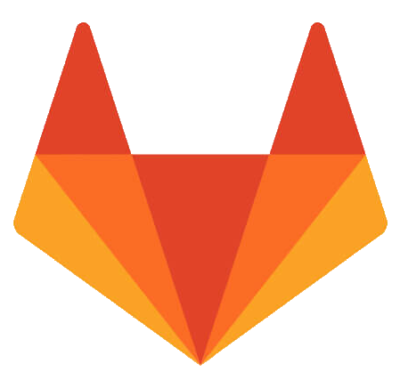
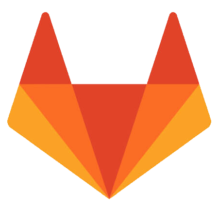

Aventuriers du rail
Visuel de l'application

Présentation du projet
Le projet "Les Aventuriers du Rail" consistait à recréer le célèbre jeu de société du même nom sous la forme d'une application JavaFX.
L'objectif principal était de réaliser une première application dotée d'une interface graphique ergonomique et conviviale pour l'utilisateur. En proposant une expérience numérique moderne et immersive, cette adaptation du jeu original entendait conserver les règles et les mécanismes qui ont fait son succès.
Ce projet revêtait une importance particulière pour moi, car il marquait le début de mon parcours en tant que développeur d'applications interactives.
L'objectif principal était de réaliser une première application dotée d'une interface graphique ergonomique et conviviale pour l'utilisateur. En proposant une expérience numérique moderne et immersive, cette adaptation du jeu original entendait conserver les règles et les mécanismes qui ont fait son succès.
Ce projet revêtait une importance particulière pour moi, car il marquait le début de mon parcours en tant que développeur d'applications interactives.
Compétences mises en avant
La réalisation de l'application "Les Aventuriers du Rail" a permis de développer et de mettre en avant un ensemble de compétences techniques et créatives. La programmation orientée objet, la conception d'interfaces graphiques ergonomiques avec JavaFX et l'implémentation de règles de jeu complexes sont autant de compétences acquises au cours du projet. La gestion du temps et des ressources a également été essentielle pour mener à bien cette initiative ambitieuse. Par ailleurs, le travail d'équipe et la communication ont été des compétences clés pour collaborer avec d'autres personnes impliquées dans le projet, afin d'assurer la cohérence et la qualité du produit final.
Languages utilisées et outils

 
